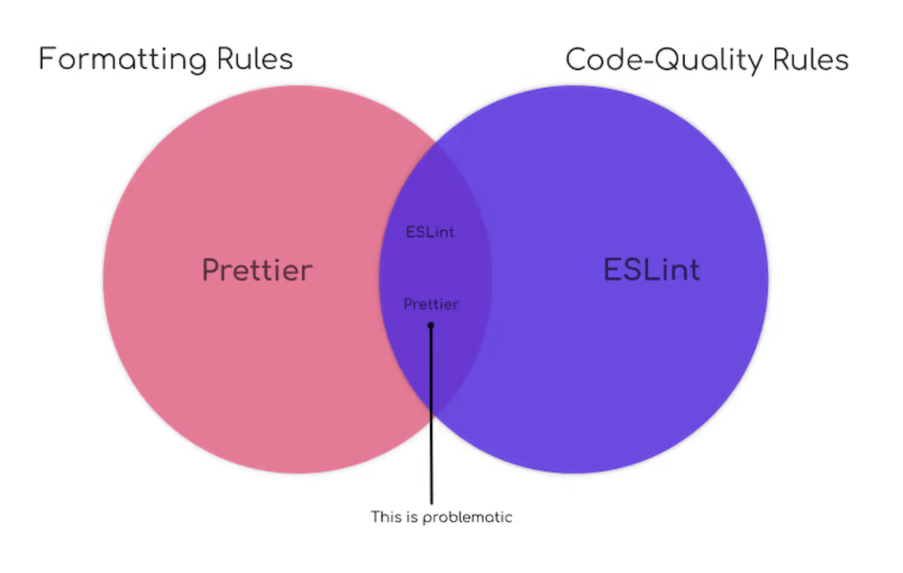

이전 편에서 코드 퀄리티 관리를 위한 ESLint 와 코드 포맷팅을 위한 Prettier 에 대해 알아봤습니다. 이번 편에서는 프로젝트에 ESLint 와 Prettier 를 적용하는 방법에 대해서 알아보도록 하겠습니다.
프로젝트에 ESLint, Prettier 적용하기
코드 퀄리티와 포맷팅은 함께 사용할 때 프로젝트를 좀 더 효율적으로 관리할 수 있고 작업자들의 생산성을 높여줄 수 있습니다.
하지만 이전 편에서 언급했듯이 코드 퀄리티를 담당하는 ESLint로도 코드 포맷팅 규칙도 설정할 수 있기 때문에 Prettier 를 적용하기 전에 ESLint 의 포맷팅 규칙을 off 해 주는 것이 좋습니다.
ESLint 의 포맷팅 규칙 off 하기
ESLint 에서 포맷팅 규칙을 off 하기 위해서는 eslint-config-prettier패키지를 사용합니다.
1 | // .eslintrc.js |
해당 패키지는 eslint-config-airbnb와 같이 ESLint 설정 파일의 extends에 미리 선언된 ESLint규칙 세트에 대한 포맷팅 규칙을 일괄 off 처리하는 역할을 합니다.
Install
eslint-config-prettier 를 프로젝트의 devDependencies 패키지로 설치합니다.
1 | npm install -D eslint-config-prettier |
Configuration File
.eslintrc.js 파일의 extends 객체의 값으로써 배열 마지막 요소에 "prettier" 를 추가해 줍니다. 정상적인 포맷팅 규칙 off 를 위해서 꼭 배열의 마지막 요소로 추가되어야 합니다.
1 | module.exports = { |
참고로 해당 패키지는 extends 에 추가된 규칙에 대해서만 동작합니다. 즉 extends 에 별도로 추가한 설정이 없다면 꼭 사용할 필요는 없으며, rules 에 직접 포맷팅 관련 옵션을 추가한 경우는 해당 패키지로 off 처리할 수 없습니다.
하지만 rules 에 직접 선언된 포맷팅 규칙까지 off 시켜주지 못 한다면 반쪽짜리 설정이 되어버리기 때문에 eslint-config-prettier 에서 제공하는 CLI 를 활용하여 ESLint 에 포맷팅 규칙이 포함되지 않도록 해줄 수 있습니다.
Finally, run the CLI helper tool to find problems in the “rules” section of your .eslintrc.* file. (Remember “rules” always “wins” over “extends”!)
npx eslint-config-prettier src/**/*.js
해당 명령어는 ESLint 에 선언된 포맷팅 규칙이 있는지 여부를 검사하고 출력하는 역할을 합니다. (Prettier의 포맷팅 규칙과 무관하게 ESLint 의 포맷팅 규칙을 찾아내기 때문에 안심하고 사용할 수 있습니다.) 위 설정 파일에는 rules 에 포맷팅 규칙인 semi 가 포함되어 있기 때문에 해당 명령어 실행시 아래와 같이 결과가 출력됩니다.
1 | npx eslint-config-prettier src/**/*.js |
출력된 내용을 보고 rules 에서 semi 포맷팅 규칙을 제거해 줍니다. 안타깝게도 자동으로 제거되진 않기 때문에 직접 제거해 줘야 하는데 다행히 package scripts 작성시 eslint 실행전에 포맷팅 규칙 중복 검사를 수행시킬 수 있습니다. 자세한 설정은 뒤에서 한번 더 알아보도록 하겠습니다.
ESLint 와 함께 Prettier적용하기
ESLint 의 포맷팅 규칙은 off 했기 때문에 이제 안전하게 Prettier 를 적용할 수 있습니다.
퀄리티 관련 규칙은 .eslintrc.js 에, 포맷팅 관련 규칙은 .prettierrc.js 에 작성하여 관리하면 됩니다. 아래에서 ESLint 와 Prettier 를 함께 사용할 수 있는 방법에 대해 알아보도록 하겠습니다.
Prettier 를 ESLint 의 플러그인으로 등록하여 사용하는 방법
Prettier 를 별도로 실행하지 않고 ESLint 의 플러그인으로 등록하여 실행하는 방법으로 ESLint 실행 만으로 코드 포맷팅까지 처리할 수 있기 때문에 많이 사용되는 방법중 하나입니다. eslint-plugin-prettier 라는 패키지를 설치하고 ESLint 설정 파일에 해당 플러그인 설정을 추가하면 사용할 수 있습니다.
Install
eslint-plugin-prettier 를 프로젝트의 devDependencies 패키지로 설치합니다.
1 | npm install -D eslint-plugin-prettier |
Configuration File
ESLint 설정 파일의 plugins 객체의 값으로 "prettier" 를 추가해주고 rules 에 "prettier/prettier": "error" 도 함께 추가해 줍니다.
1 | module.exports = { |
plugins 에 추가한 "prettier" 는 prettier 를 ESLint 의 플러그인으로써 동작하기 위한 설정이고, rules 에 추가한 "prettier/prettier": "error" 는 prettier의 포맷팅 이슈를 ESLint 의 에러 리포팅으로 출력하기 위한 설정입니다. 두 설정은 세트로 작성되지 않으면 prettier가 동작하지 않기 때문에 꼭 세트로 작성합니다.
ESLint 의 포맷팅 규칙을 off 하고 Prettier 를 플러그인으로 적용한 버전의 최종 설정 파일은 아래와 같습니다.
1 | module.exports = { |
rules 에 보면 "prettier/prettier": "error" 외 처음 보는 "arrow-body-style", "prefer-arrow-callback" 규칙이 추가된 것을 볼 수 있는데 정상적인 포맷팅을 위해서는 추가해 주는게 좋습니다. 자세한 내용은 해당 규칙 이슈를 확인해 주세요.
위 설정은 아래 한줄로 대체할 수 있습니다.
1 | module.exports = { |
참고로 앞서 살펴본 방법을 사용하면 ESLint 와 Prettier 를 프로젝트에 적용할 수 있지만 포맷팅 문제도 ESLint 의 에러 리포팅에 포함되게 됩니다. 때문에 오류 메시지가 지나치게 많아지고 실제 퀄리티 관련 에러를 보기 어렵게 한다는 단점이 있습니다.
그리고 ESLint, Prettier 설정 파일에 같은 옵션이 설정되어도 설정값이 같으면 충돌이나지 않습니다. 즉, 같은 옵션에 대해 설정값이 다른 경우만 에러를 리포팅하고 그렇지 않은 경우 포맷팅이 정상적으로 적용됩니다.
아래는 두 패키지에서 포맷팅 규칙인 세미콜론("semi")규칙에 대한 설정 값이 다르게 선언된 경우 입니다.
1 | // .eslintrc.js |
1 | // .prettierrc.js |
위 처럼 설정 파일이 작성되었을 경우 ESLint를 실행하면 아래와 같이 ESLint Error가 리포팅 됩니다.
1 | 1:35 error Extra semicolon semi |
하지만 ESLint 의 semi 규칙이 'never’가 아닌 'always’로 변경되면 아무런 ESLint Error 없이 ESLint(+prettier)가 실행되고 실제 코드에는 ; 이 붙게됩니다.
Prettier와 ESLint가 순차적으로 실행되도록 npm script를 작성하는 방법
Prettier 를 사용하는 다른 방법은 ESLint, Prettier 를 순차적으로 직접 실행하는 것 입니다. ESLint 설정 파일에 extends 배열의 마지막 요소로 "prettier" 를 추가했기 때문에 rules에 선언된 포맷팅 규칙을 제외한 나머지 규칙은 더 이상 신경쓸 필요가 없습니다.
하지만 ESLint 와 Prettier 를 직접 실행시 rules에 선언된 포맷팅 규칙은 별도로 체크하지 않으면 포맷팅이 두번 적용되어 마지막 규칙으로 코드가 변경될 수 있기 때문에 반드시 포맷팅 규칙 체크가 선행되어야 합니다.
다행이 앞서 살펴본 eslint-config-prettier 패키지에서 ESLint 의 포맷팅 규칙을 검사할 수 있는 CLI 를 제공해 주기 때문에 이를 활용하여 npm scripts를 준비하도록 합니다.
실제로 필요한 npm scripts 는 아래와 같습니다.
1 | { |
실행될 스크립트를 간략하게 살펴보겠습니다.
- check-conflict-formatting-rules: ESLint 포맷팅 규칙 유무 검사
- lint:fix: ESLint 실행
- prettier:fix: Prettier 실행
- integrated-code-manager: ESLint 포맷팅 규칙 유무 검사 -> Prettier -> ESLint 순차적으로 실행
실제로 호출될 스크립트는 integrated-code-manager 스크립트이며 ESLint 의 포맷팅 규칙 유무에 따라 Prettier, ESLint 스크립트를 순차적으로 호출하게 됩니다.
참고로 && 연산자는 이전 동작 수행이 정상적으로 되면 다음 스크립트를 실행해주는 연산자라고 생각하시면됩니다.
&&: sequential execution.&: parallel execution.
만약 ESLint rules 에 포맷팅 규칙이 있다면 아래와 같은 메시지를 출력후 다음 스크립트는 실행되지 않습니다.
1 | The following rules are unnecessary or might conflict with Prettier: |
integrated-code-manager 스크립트 실행시 위와 같은 메시지가 출력되면 ESLint 설정 파일에서 직접 선언된 포맷팅 규칙을 제거해 줍니다.
End
지금까지 프로젝트에 ESLint 와 Prettier 를 적용하는 방법에 대해서 알아봤습니다.
다음 편에서는 husky, lint-staged 패키지를 활용하여 이를 자동화하는 방법에 대해 알아보도록 하겠습니다.
궁금한 점이나 잘 못된 내용이 있으면 피드백 부탁드립니다.
읽어주셔서 감사합니다.